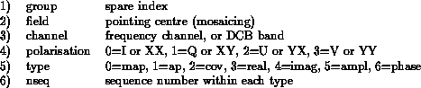

The WMP-file (image data)

The NEWSTAR WMP file contains `image data', i.e. a collection of 2-dimensional arrays of data. The various `images' in a WMP file are related in some way, but do not have to have the same dimensions. Examples are radio maps at various frequencies (line observations), polarisations, or pointing directions (mosaicking). There may also be antenna patterns and various kinds of residual maps, or even rectangular arrays ov uv-data.
The basic unit in the WMP file is the Map (a 2-dimensional array of pixel values). It can be selected by the user by means of 6 integer indices:

Indices may also be ranges of indices, or wildcards (), as explained in more detail in the section `Overview of NEWSTAR files' in this Cookbook. Note that the Map in the WMP-file plays the same role as the Set in the SCN-file.
All indices are just running numbers (starting at 0!), except `type' and `polarisation', which have fixed codes (see above).
Neither the `field' nor the `channel' index nrs correspond with the `field' or `channel' nrs in the SCN-file. The reason for this is that a map may be made from a combination of fields or channels.
Usually, all Maps belong to the same `group' (0). Therefore, the first index is called a `spare index' here. However, any selection of Maps may be put into a new group in the same WMP file, using the NMAP option REGROUP.
The 6th index allows for a sequence of Maps of a certain type, usually derived from each other. Examples are residual Maps after CLEANing, or the Maps that result from combining other Maps.

A summary of the WMP-file contents and layout may be obtained by using the program NMAP, option SHOW:
****** Put new script here ******
This particular WMP-file actually contains the following (rather strange) collection of Maps:
g.f.c.p.t.n (#abs)
group.field.chan.pol.type.nseq
0.0.0.0.2.0(#0) type COVE
uv-coverage for XY-map
0.0.0.0.6.0(#1) type PHAS
map of XY phases
0.0.0.0.0.0(#2) type MAP
XY-map
0.0.0.0.1.0(#3) type AP
antenna pattern for XY-map
0.0.0.1.6.0(#4) type PHAS
map of Q phases
0.0.0.1.0.0(#5) type MAP
Q-map
0.0.0.2.6.0(#6) type PHAS
map of V phases
0.0.0.2.0.0(#7) type MAP
V-map
0.0.0.3.6.0(#8) type PHAS
map of iV phases
0.0.0.3.0.0(#9) type MAP
iV-map
The 10 `datasets' (Maps) in this WMP-file belong to 1 `group' (1st index, =0). The number in parentheses indicates the absolute Map nr within the file.
Note that the number of polarisations is not really 4, and that the number of types is not really 7. Indicated are the highest index values present, plus one.
The WMP file header only contains book-keeping information that allows the program to find its way around:
****** Put new script here *****

Each Map in a WMP file contains a header with information, which can be inspected with the program NMAP, option SHOW:
****** Put new script here *****


The actual data in a Map can be displayed on the X-screen as a color map by using the program NGIDS, or as a contour or gray-scale plot with the program NPLOT. However, its is also possible to inspect small areas of a WMP Map, or its statistics, with the program NMAP, option SHOW:
****** Put new script here *****
Note that the `noise' option gives the rms of the pixel values in the selected area(s), while the `offset' option gives the rms with respect to their average value (offset). A histogram of pixel values is printed in the log-file (NMAP.LOG).
.
.
.
.
.
.
.
.
.
.
.
.
.
.
.
.
.
.
.
.